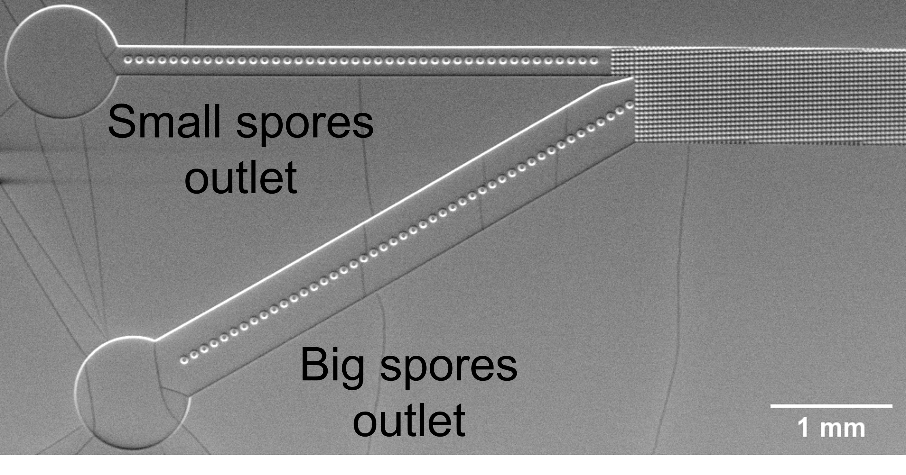

Sort spores
DLD-based enrichment of low nucleus content spores
A label-free, size-based microfluidic strategy designed to increase the probability of recovering genetically homogeneous material.

Step 1 — Establish the physical basis
Spore size increases with nucleus number
The central hypothesis was that spores with a single nucleus tend to be smaller than spores containing several nuclei. Equivalent diameter was measured in bright-field images, while GFP-labelled nuclei were counted in fluorescence images.
Analysis of more than 1,800 spores showed a clear trend: spores with more nuclei tended to have larger equivalent diameters, although the distributions overlap. A theoretical critical diameter around 6 µm was therefore selected as a practical compromise for enriching the low-nucleus-content population.
Step 2 — Implement DLD
Deterministic Lateral Displacement
DLD uses a periodic array of micropillars. Particles below a device-dependent critical size mainly follow the fluid streamlines, whereas larger particles repeatedly interact with the array and are progressively displaced laterally.
Three devices were developed with theoretical critical diameters of 4, 5 and 6 µm. The system was first characterized with bead suspensions, including optimization of flow conditions, buffer composition and empirical separation behaviour.
Step 3 — Test with fungal spores
DLD 5µm provides the most useful biological compromise
When tested with B. cinerea spores, DLD 5µm recovered a population at the small outlet dominated by spores with one or two nuclei, with only a smaller contribution from spores containing three nuclei.
The thesis reports that DLD 5µm gave the best balance between enrichment and recovery among the three tested designs. It therefore became the reference device for the genetic-purification experiments.
It combines useful enrichment of mononucleated spores with enough recovered biological material to remain practical for downstream culture and PCR.
Genetic purification
From enrichment to homogeneous mutant DNA
Across the experiments, a consistent trend was observed toward more colonies with homogeneous DNA after DLD processing. The magnitude of the improvement varied between biological replicates, so the thesis explicitly treats this result as promising but still requiring additional repetitions for robust quantification.